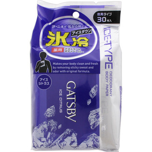
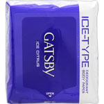

返回列表
产品名称：ギャツビー アイスデオドラントボディペーパー アイスシトラス 徳用

マンダム ギャツビー アイスデオドラントボディペーパー アイスシトラス 徳用 ３０枚（医薬部外品）
メーカー マンダム
JANコード 4902806132465
商品の特徴
汗・ニオイ 元から防ぐ
氷冷 アイスダウン
徳用タイプ
成分・分量
【有効成分】
イソプロピルメチルフェノール、パラフェノールスルホン酸亜鉛
【その他の成分】
エタノール、精製水、ｌ－メントール、ポリオキシエチレンポリオキシプロピレンデシルテトラデシルエーテル、香料
用法及び用量
【使用方法】
○表面のシールをＯＰＥＮのところから開け １枚ずつ取り出してお使いください
○中味の乾燥を防ぐため ご使用後はシールを元のようにしっかり閉めてください